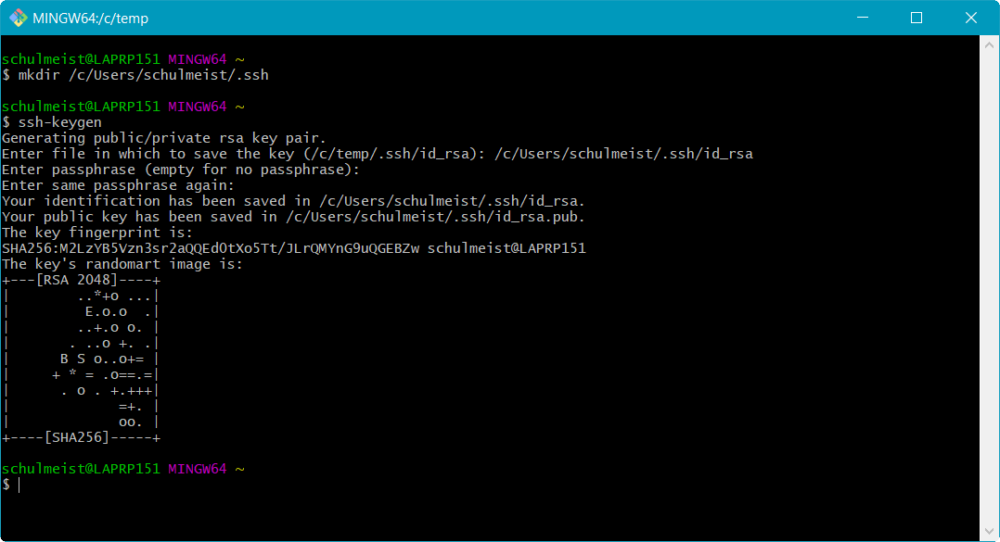

Im dritten Semester nähern wir uns nun immer mehr der professionellen
Softwareentwicklung an. In der Vorlesung setzen wir daher von Anfang an
auf die richtigen Werkzeuge, um unsere Projekte so praxisnah wie möglich
aufzuziehen. Insgesamt benötigen wir deshalb folgende Programme:
Git
node.js
Atom
Die Programme haben dabei folgende Funktion:
Git
Einst waren Compiler und Editor alles, was man zum Programmieren benötigte.
Doch je größer ein Projekt wird, desto schwieriger wird es, die Änderungen
am Quellcode nachvollziehbar zu dokumentieren, so dass schon früh spezielle
Werkzeuge hierfür entstanden sind. Git ist ein solches Werkzeug. es ermöglicht
uns darüber hinaus aber auch, mit mehreren Personen am selben Quellcode zu
arbeiten und diesen über das Internet zu teilen.
node.js
Bei node.js handelt es sich vereinfacht gesagt um eine JavaScript-Umgebung
außerhalb des Browsers. Ursprünglich entstanden, um auch den Serverteil einer
Webanwendung in JavaScript entwickeln zu können, nutzen es viele Entwickler
heutzutage auch im Frontend-Bereich, um fremde JavaScript-Bibliotheken in ihre
Anwendungen zu integrieren und Hilfsprogramme zur Bearbeitung des Quellcodes
auszuführen.
Atom
Microsoft und Apple sind leider bekannt dafür, ihren Betriebssystemen nicht einmal
einen auch nur ansatzweise für Programmierer geeigneten Editor beizulegen. In der
Vorlesung verwenden wir deshalb Atom, der von den Machern von GitHub speziell für
Webentwickler angeboten wird und sich entsprechend großer Beliebtheit erfreut.
Nicht alle Entwicklungswerkzeuge, die wir in der Vorlesung verwenden, kommen mit
einer eigenen Installationsroutine. Viele Programme müssen einfach nur als ZIP-Datei
entpackt und dann aus dem jeweiligen Verzeichnis heraus gestartet werden. Sicher
hast du bereits ein Verzeichnis mit Vorlesungsunterlagen auf deinem Rechner. Dort
solltest du deshalb ein weiteres Verzeichnis nur für die hier beschriebenen
Zusatzprogramme anlegen.
Einige Programme werden wir semesterübergreifend verwenden. Du solltest das Verzeichnis
deshalb außerhalb deiner üblichen Semester/Vorlesungsstruktur anlegen und einfach
Software, Entwicklungswerkzeuge oder
Zusatzprogramme nennen.
Hier kommen alle für die Vorlesungen benötigten Zusatzprogramme rein
Verzeichnis angelegt? Alles klar! Dann kann es jetzt los gehen.
1)
Besuche die Webseite https://git-scm.com/
und lade das Installationspaket für dein Betriebssystem herunter.
Download von Git
2)
Unter Windows heißt die Installationsdatei Git-2.18.0-64-bit.exe
oder ähnlich, wobei 2.18.0 die Versionsnummer ist und daher bei dir
abweichen kann. Starte die Datei, um die Installation zu beginnen. Während der Installation
wirst du gefragt, welche Komponenten installiert werden sollen. Du kannst die Vorauswahl
einfach übernehmen und auf weiter klicken.
Auswahl der zu installierenden Komponenten
Im nächsten Schritt fragt das Setup, mit welchem Editor du deine Commit-Nachrichten erfassen willst.
Falls hier Notepad++ zur Auswahl steht, solltest du es auswählen. Im Grunde
genommen ist es aber egal, da wir in der Vorlesung selten mit der Kommandozeile arbeiten werden.
Auswahl des bevorzugten Editors zur Erfassung der Commit-Nachrichten
Da Git ursprünglich für die Entwicklung des Linux-Kernels entwickelt wurde, enthält die Installation
unter Windows eine Vielzahl von Kommandozeilenprogrammen aus der Unix-Welt. Linux- und mac-User haben
diese Programme bereits installiert, unter Windows fehlen sie jedoch in der Regel. Die Auswahl im
nächsten Schritt solltest daher auf Use Git from the Windows Command Prompt
stehen lassen.
Auswahl der zu verwendenden Shell
Die nachfolgenden Fragen kannst du ebenfalls alle überspringen. Übernimm einfach die Voreinstellungen
und klicke dich solange durch, bis die Installation beginnt.
Ab jetzt heißt es Warten …
3)
Um die Installation zu testen, öffne ein Konsolenfenster. Am einfachsten geht dies über das Startmenü,
indem du dort den Befehl cmd eintippst und ausführst.
Start der Kommandozeile unter Windows
Gib innerhalb des Konsolenfensters den Befehl git ein und bestätige ihn mit
ENTER. Wenn alles gut geht, solltest du dann den Hilfetext von Git angezeigt bekommen.
Anzeige des git-Hilfetexts innerhalb der Kommandozeile
4)
An dieser Stelle solltest du dann gleich noch deinen Namen und deine E-Mailadresse in der Git-Konfiguration
hinterlegen. Somit kann Git die von dir vorgenommenen Änderungen an einem Quellcode auch wirklich dir zuordnen.
Gib daher folgende Befehle ein, wobei du Max Mustermann natürlich ersetzen musst:
Hinweis für mac-User: Sollte an dieser Stelle die Fehlermeldung Invalid active
developer path erscheinen, musst du die
Kommandozeilenwerkzeuge von Xcode installieren.
Gib hierfür einfach folgenden Befehl ein und klicke die Installation durch:
xcode-select --install
Danach kannst du die Befehle zur Einrichtung von Git erneut versuchen:
5)
Zum Schluss generieren wir noch die SSH-Schlüssel, mit denen du dich ohne Kennworteingabe später bei GitHub
authentifizieren kannst. Öffne hierfür das Startmenü und wähle folgenden Eintrag aus: Git
→ Git Bash. Dadurch öffnet sich ein Konsolenfenster mit einer UNIX-artigen Konsole.
Dort musst du dann folgende Befehle eingeben, wobei du schulmeist natürlich durch deinen
eigenen Anmeldenamen ersetzen musst. Diesen siehst du in der ersten Zeile vor dem @-Zeichen:
mkdir "/c/Users/schulmeist/.ssh"
ssh-keygen
Wenn ssh-keygen nach dem Ablageort der neuen Schlüsseldatei fragt, gib dementsprechend
"/c/Users/dein-benutzername/.ssh/id_rsa" ein. Die anderen Fragen kannst mit ENTER
einfach bestätigen. Achte bei allen Eingaben aber auf die exakte Schreibweise!

Generieren des SSH-Schlüsselpaars für die sichere Authentifizierung bei GitHub
Anschließend kannst du das Fenster mit exit beenden.
1)
Besuche die Webseite https://nodejs.org/
und lade dir das Installationspaket für dein Betriebssystem herunter.
Downlaod von node.js
2)
Unter Windows heißt die Installationsdatei node-v8.11.4-x64.msi,
wobei 8.11.4 die Versionsnummer ist und deshalb bei dir abweichen kann.
Führe die Datei aus, um die Installation zu starten. Die Fragen des Installationsassistenten
kannst du einfach durchklicken. Die Voreinstellungen sind alle in Ordnung.
Installation von node.js
3)
Zum Testen der Installation öffnest du am Besten eine Kommandozeile. Dies geht ganz einfach im Startmenü,
indem du den Befehl cmd eintippst und ausführst.
Start der Kommandozeile unter Windows
Gib dann den Befehl npm ein und bestätige ihn mit ENTER.
Wenn alles gut geht, solltest du folgenden Hilfetext sehen:
Anzeige des npm-Hilfetexts innerhalb der Kommandozeile
4)
Sollte dabei der Hinweis erscheinen, dass bereits eine neuere Version von npm verfügbar ist,
kannst du diese mit dem Befehl npm install -G npm installieren. Dabei
siehst du dann auch gleich den Node Package Manager, wofür die Abkürzung npm
steht, im Einsatz. Der auf dem Bildschirm angezeigte Befehl npm i npm
(i ist die Kurzform für install) ist an dieser Stelle ausnahmsweise nicht zu empfehlen, da er die
neue Version nicht systemweit installieren würde.
1)
Besuche die Webseite https://atom.io/
und lade dir das Installationspaket für dein Betriebssystem herunter.
Download von Atom
2)
Unter Windows heißt die Installationsdatei AtomSetup-x64.exe.
Führe sie aus, um Atom zu installieren. Die Installation läuft dabei komplett automatisch ab.
Installation von Atom
3)
Die ganzen Fragen beim ersten Programmstart kannst du alle wegklicken.
Ja, wir wollen atom://-URLS mit Atom öffnen
Ja, wir helfen gerne bei der Verbesserung des Editors
Nein, den Welcome Guide wollen wir jetzt nicht lesen
Und nein, die Willkommensseite hilft uns jetzt auch nicht weiter
4)
Als nächstes installieren wir noch ein paar nützliche Plugins. Gehe hierfür auf
File → Settings → Install.
und installiere die folgenden Plugins:
git-plus
autoclose-html
Suche und Installation von Plugins
5)
Zusätzlich gibt es noch ein paar nützliche Einstellungen, wenn wir schon einmal hier sind. Klicke hierfür
im Settings-Tab auf Editor und ändere folgende Einstellungen:
2)
Logge dich auf GitHub ein und klicke oben rechts auf deinen Avatar. Anschließend wähle den Menüeintrag
Settings aus.
Aufruf der Einstellungen in GitHub
3)
In den Einstellungen kannst du verschiedene Informationen über dich hinterlegen. Eine kurze Biographie,
ein Link auf deine Webseite sowie ein Foto wären nicht schlecht. Mindestens solltest du aber deinen
SSH-Schlüssel hinterlegen, damit du beim Programmieren nicht ständig deine Zugangsdaten eintippen musst.
Klicke daher links auf SSH and GPG keys.
4)
Klicke nun oben rechts auf New SSH key. In der darauf folgenden Seite kannst du
dem Schlüssel einen Namen geben (typischerweise der Name des Computers, zu dem er gehört). In das Feld
Key musst du den Inhalt der Datei c:\Benutzer\dein-benutzer\.ssh\id_rsa.pub
einfügen. Unter Linux und macOS heißt die Datei ~/.ssh/id/id_rsa.pub.
Copy & Paste deines öffentlichen SSH-Schlüssels nach GitHub
Klicke anschließend auf Add SSH key, um den neuen Schlüssel zu speichern.